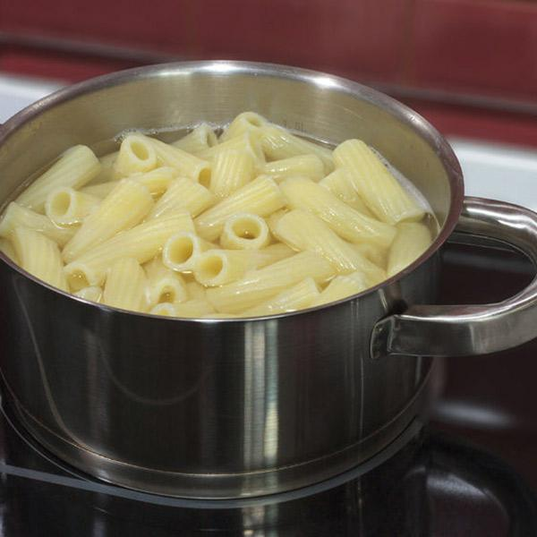
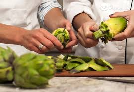
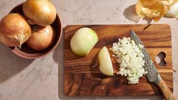
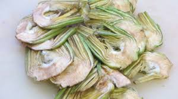
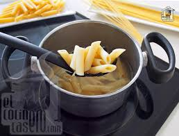
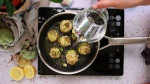
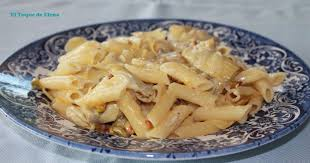

Ingredientes
- 500 gr pasta de macarron
- 5 alcachofas
- Media Cebolla
- 1 diente de ajo
- 60 gr de queso parmesano
- Hojas de menta
- Aceite de oliva
- Sal
- Pimienta negra
Paso a paso
- Poner a hervir una olla con abundante agua, para la pasta.

- Limpiar las alcachofas: eliminar a mano las hojas externas más duras (serán muchas), cortar la punta (casi un tercio),
cortar el extremo del tallo, pelar el tallo y la base de la alcachofa.Cortar en cuartos y eliminar los pelos internos si hay.
Sumergir en un bol con agua y medio limón, o ramas de perejil,
para que no ennegrezcan.

- Picar la cebolla y pelar el ajo.
En una sartén amplia poner unas cucharadas de aceite de oliva, añadir la cebolla picada y el ajo y dejar sofreír a fuego suave.

- Mientras se hace el sofrito, cortar las alcachofas en láminas, tallos incluidos.
Añadir a la sartén, añadir sal y pimienta, mezclar y tapar. (Si se usa el vino de Jerez, añadirlo dejar esfumar unos segundos antes de tapar).

- Mientras, poner a cocer la pasta -teniendo cuidado con los tiempos:
la salsa (en este caso las alcachofas) debe quedar hecha antes de que esté lista la pasta.

- Cuando las alcachofas estén hechas, añadir la menta picada.

- Escurrir la pasta al dente, reservando una taza del agua de cocción.
Añadir la pasta a la sartén con las alcachofas,
añadir un par de cucharadas del agua de cocción reservada y mantecar a fuego fuerte mezclando un par de minutos.
- Cuando esté lista (agua absorbida) apagar el fuego, añadir el queso rallado y, si gusta, más pimienta negra.

Resultado final